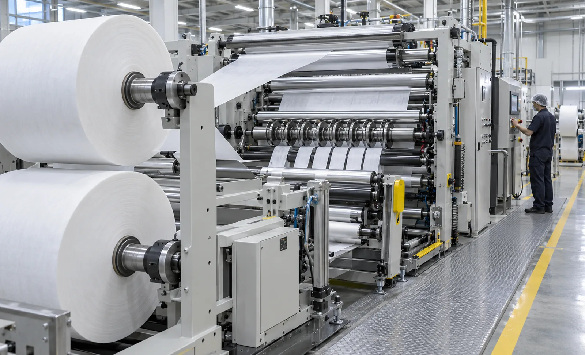
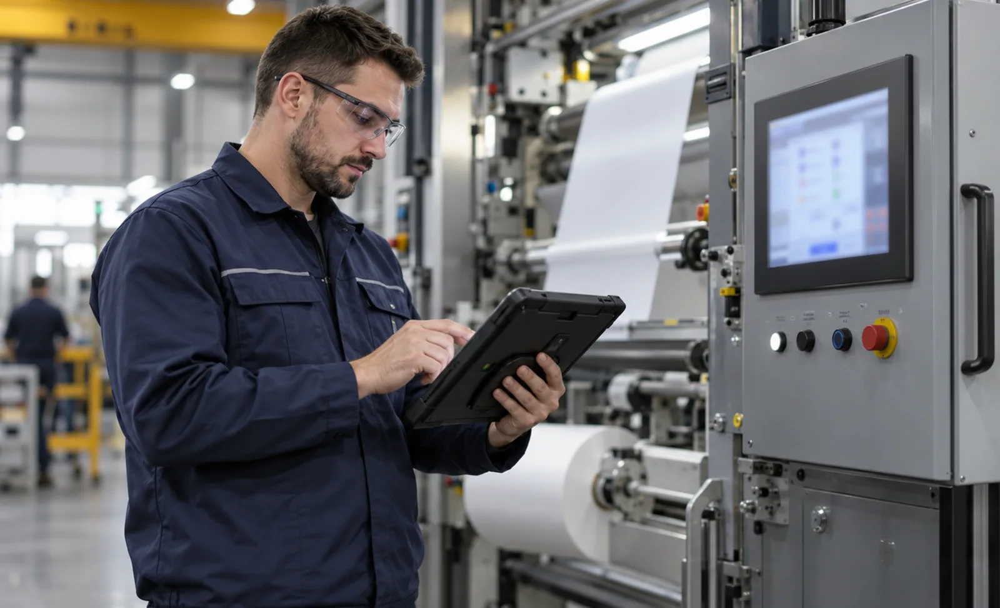

Published September 23, 2026 | By HDPTH Technical Editorial Team

Buyers compare slitter rewinders on price, width and maximum speed because those are the numbers on the quotation. The costs that actually separate two machines — blade life on your material, threading and splicing waste, crew size, how quickly a failed drive can be replaced — are decided after delivery. This guide breaks them out so you can price them before signing.
1. Purchase price, and what it usually excludes
The headline number covers the base machine in a standard configuration. Commonly excluded are the tooling set for your slit widths, extraction and trim handling, splice table, roll unloading, shaft and chuck sets, installation, training and the spare parts package. Two quotes that look close can diverge once these are added, so the first step in any comparison is forcing the same scope. Prices span a wide band: compact narrow machines sit at the low end, wide high-speed lines with automatic knife positioning and turret rewinding considerably higher, and battery foil or separator lines higher again.
2. Installation, site preparation and commissioning
Budget for foundations or floor loading, power and compressed air, extraction ducting, crane access and rigging, and the production time lost during installation. Site readiness drives this cost more than the machine does — check floor flatness, power quality and utilities in advance. Commissioning covers threading trials, tension tuning, recipe setup and operator familiarisation; agree in writing how many days are included.
3. Energy
Energy is a modest share of running cost on a mid-width machine and a meaningful one on wide, high-speed lines on multiple shifts. What matters is how much installed power is actually used at your duty point. Ask for measured consumption at your production speed and standing consumption when the line idles; see energy efficiency on slitter rewinders.
4. Blades, tooling and consumables
Cutting method sets the consumable profile. Shear slitting uses matched circular knives that are reground periodically; razor slitting uses low-cost blades changed frequently; score cutting crushes the web against an anvil and suits specific materials. Blade life depends on your material, filler content, speed and knife setting — not a catalogue figure — so ask vendors for expected life on your material and the cost of a full tooling set. Holder quality, clearance and overlap setting and sharpening practice all move this number; see knife life and consumables cost and shear, razor and score slitting compared.
5. Spare parts and service
Price the wearing parts you will certainly replace: knives and holders, belts, air shafts and core chucks, idler bearings, lay-on roller covers, sensors and drive components. Then ask about availability — lead time, local stock, and whether critical parts are proprietary or standard industrial components. A machine built on widely available drives and bearings is cheaper to keep running than one with single-source parts. Agree response times explicitly; our warranty and spare parts guide covers what to put in writing.
6. Downtime, scrap and rework
These are the largest and least visible line items. Stoppages cost labour and missed deliveries; scrap costs material plus conversion value already spent. Threading waste, splice waste, edge trim, start-up rejects and downgraded rolls are all machine-dependent. Estimate them by measuring your current line and asking what the new machine changes: automatic knife positioning shortens changeover, reliable web break detection limits length lost per break, and better tension control reduces downgrades.
7. Labour and training
Count operators per shift, not per machine: threading, knife setting, roll unloading and packing often consume more labour than the run itself. Automatic threading, automatic blade changing, powered roll unloading and recipe-driven setup all reduce crew size or skill dependency. Training cost is front-loaded but real — budget for it and check the HMI suits the staffing level you plan to run.
8. Residual value
A well-documented machine from a known builder with standard components, CE documentation and a service history keeps a far larger share of its price than an obscure one. If you expect to replace it within five to seven years, residual value is a genuine line item; if you will run it for fifteen, its effect is small. The same logic applies when buying second-hand — see our used machine inspection guide.
| Cost element | How to price it | Why buyers get it wrong |
|---|---|---|
| Purchase price | Quoted price plus tooling, extraction, roll handling, installation, training | Quotes exclude different items, so comparisons are not like-for-like |
| Installation | Floor, power, air, ducting, rigging, commissioning days, lost production | Site readiness, not machine design, drives this cost |
| Energy | Measured kW at your duty point plus idle consumption | Installed power is quoted; actual consumption rarely is |
| Tooling | Blade life on your material, plus a full replacement set | Catalogue life figures do not survive abrasive materials |
| Spares | Wearing parts, lead times, standard versus proprietary parts | Lead time, not part price, is what stops your line |
| Downtime and scrap | Current OEE and waste rate, adjusted for the new machine | Never invoiced, yet usually dominates total cost |
| Labour | Crew per shift for threading, setup, unloading, packing | Quoted speed says nothing about crew size |
| Residual value | Realistic resale after your ownership period | Ignored entirely when the machine is bought |

A comparison framework you can send to vendors
- One duty specification: material, gauge, width, slit widths, speeds, roll diameters, cores, shift pattern.
- One scope list: machine, tooling, extraction, roll handling, installation, training, spares, warranty.
- One unit of comparison: cost per production hour, or cost per saleable roll at your utilisation.
- Stated assumptions: tariff, labour rate, blade life, downtime and waste percentages — and who supplied each figure.
Want a like-for-like cost comparison?
Send HDPTH your material, widths, speeds and shift pattern. We will quote the full scope and help you convert competing offers into cost per production hour.
Submit Your Project InquiryQuestions to put to every vendor
- Which items on my scope list are included, and which are optional extras?
- What blade life do you expect on my material at my speed, and what does a tooling set cost?
- What is measured energy consumption at my duty point, not installed power?
- Which wearing parts are proprietary, and what is the lead time for each?
- What performance guarantees and acceptance criteria will you sign?
Turning the model into contract terms
See performance guarantees and the factory acceptance test checklist to make your TCO assumptions enforceable.
Contact HDPTHFrequently asked questions
What is included in the total cost of ownership of a slitter rewinder?
Total cost of ownership is the purchase price plus everything the machine consumes while you own it: installation and commissioning, energy, blades and consumables, spare parts and service, labour, unplanned downtime, scrap and rework, minus the residual value on resale. Express all of it on one basis — cost per production hour or per saleable roll — over an agreed ownership period such as five or ten years.
How much does a slitter rewinder cost?
Only ranges are meaningful, because width, speed, tension architecture and automation move the price substantially. Compact narrow machines for routine slitting sit at the low end; wide high-speed nonwoven or film lines with automatic knife positioning and turret rewinding cost considerably more; specialised battery foil or separator lines more again. Compare like-for-like scope: machine, tooling set, installation, training, spares and warranty.
How do I compare two quotes that are not configured the same way?
Normalise before comparing. Send every vendor the same duty specification and require a line-by-line scope list, then add what is missing yourself: tooling for your slit widths, extraction, roll handling, spares, training and commissioning days. Convert each quote to cost per production hour at your utilisation. A dearer machine that runs faster, wastes less and needs fewer operators often wins on cost per saleable roll.
Which running costs do buyers underestimate most often?
Downtime and scrap, because neither appears on an invoice. Stoppages consume labour and miss deliveries; scrap consumes material plus the conversion value already spent. Blades and holders come next: shear, razor and score cutting have different consumable profiles, and blade life depends on your material and speed rather than a catalogue figure. Energy is usually smaller than buyers expect, but grows with wide machines on multiple shifts.
How should total cost of ownership be written into the contract?
Convert the assumptions behind your business case into measurable commitments: performance guarantees for speed, slit width tolerance and waste on your material, a defined factory acceptance test, response times and spare parts availability during warranty, and agreed remedies if targets are missed. That is what turns a TCO spreadsheet into a result you can enforce.